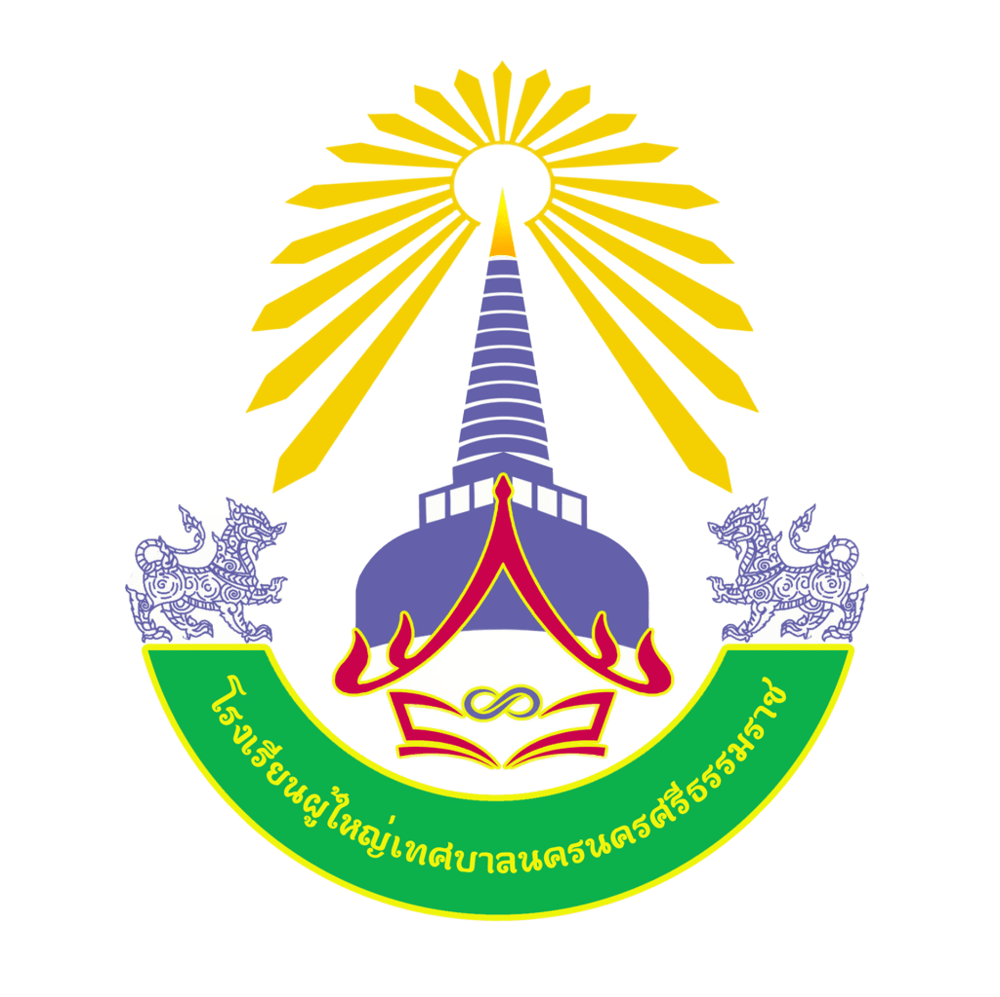

นางชุติมา กล่ำกลาย
ผู้อำนวยการโรงเรียนผู้ใหญ่เทศบาลนครนครศรีธรรมราช

ทำเนียบผู้บริหาร ครู และบุคลากรที่ร่วมขับเคลื่อนการเรียนรู้ตลอดชีวิตให้กับประชาชนในพื้นที่
ผู้อำนวยการโรงเรียนผู้ใหญ่เทศบาลนครนครศรีธรรมราช
งานการศึกษานอกระบบขั้นพื้นฐานระดับชั้น มัธยมต้น
งานการศึกษานอกระบบขั้นพื้นฐาน
เจ้าหน้าที่งานทะเบียนและวัดผล